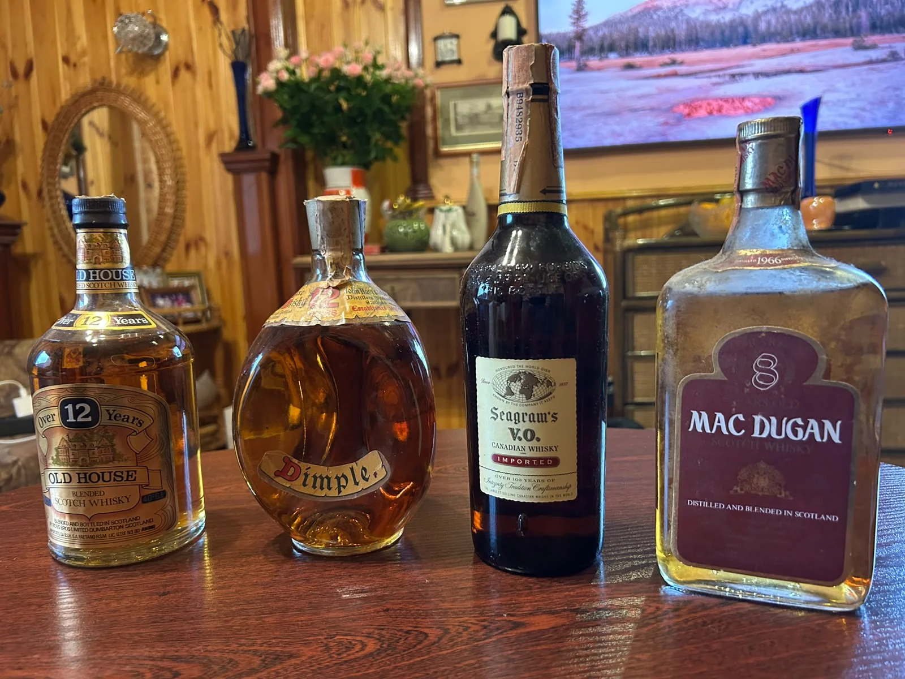

over 2,000 Whiskies. One continuing journey.
Over 2,000
The collection
02 / The collection
A world of character
Different origins.
Endless discovery.
The collection brings together core ranges and individual releases from Whisky-producing regions around the world. Each bottle is an opportunity to explore a different place, style and point of view.

From Oleksandr Martynov’s personal collectionAcross Whisky regions
Scotland · Ireland · Japan · India · Taiwan · France · Germany · Sweden · Italy · Switzerland · Spain · Belgium · Finland · Luxembourg · Israel · Australia · USA · Canada
A private collection
Bottles and details
The photographs show selected bottles and tasting settings from the project.
Discover more